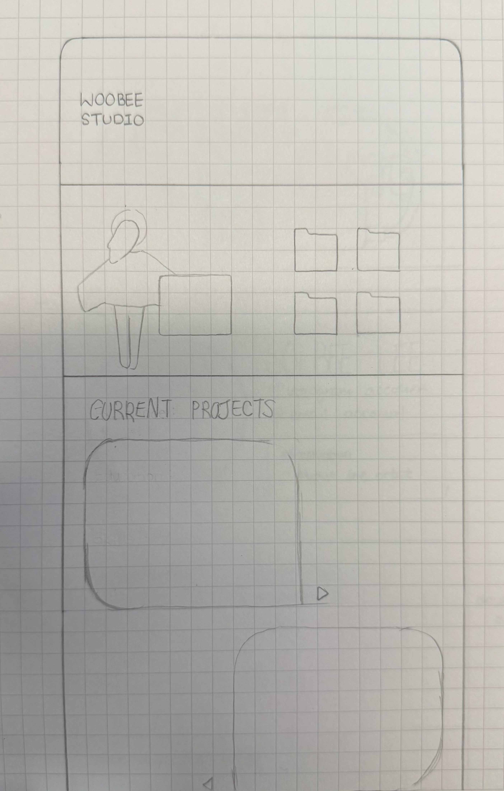
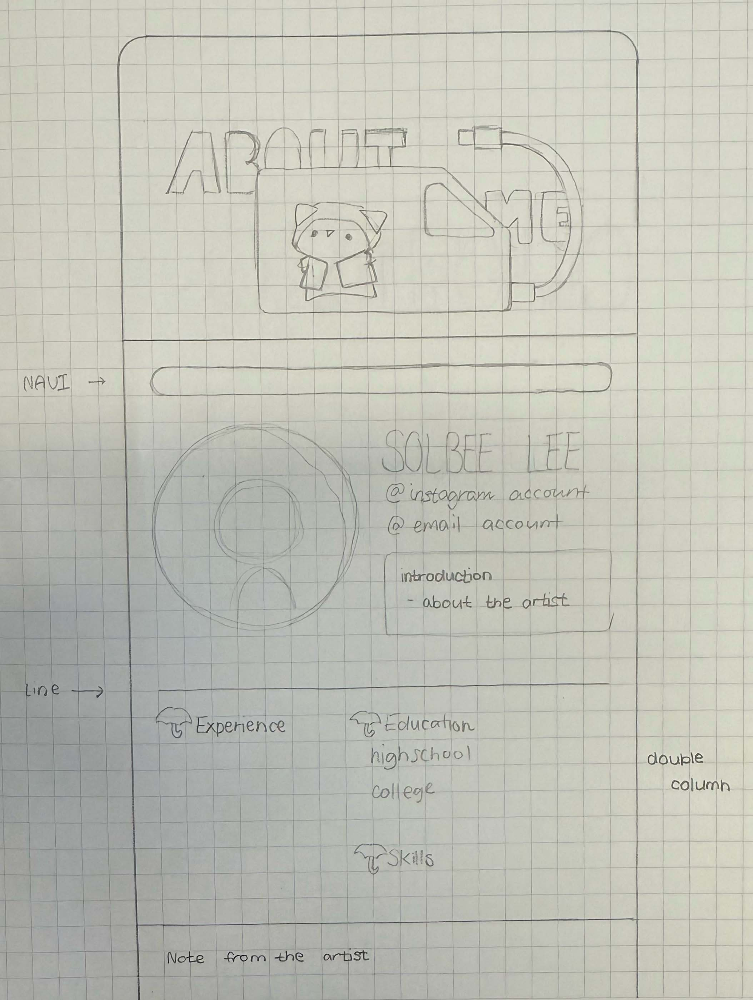
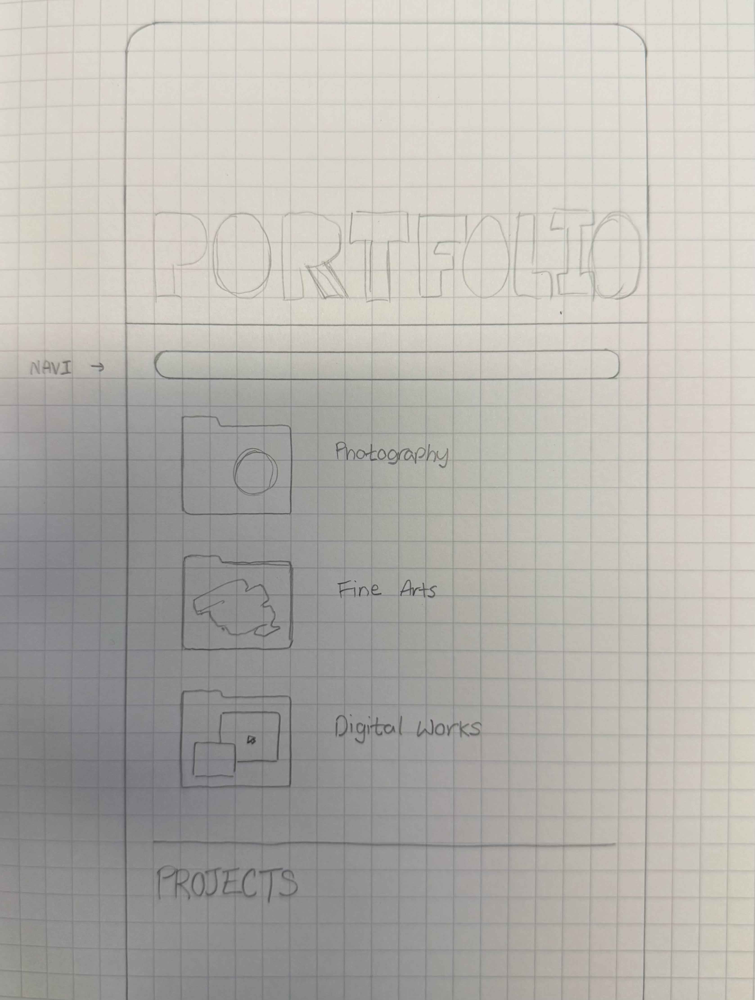
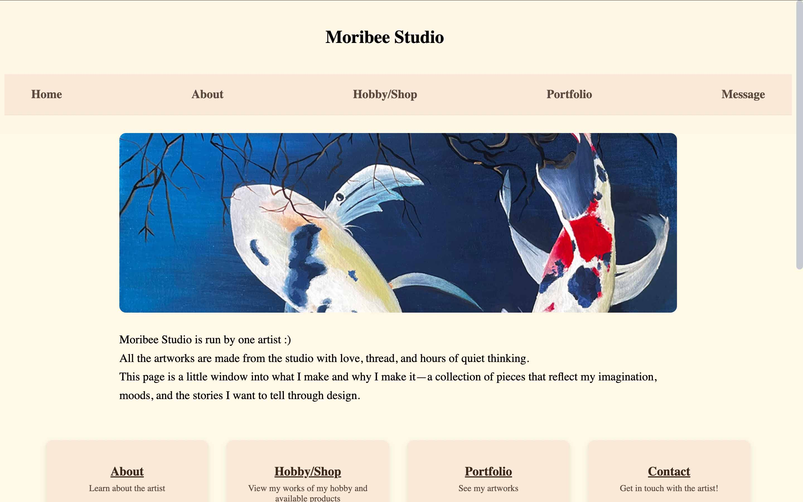
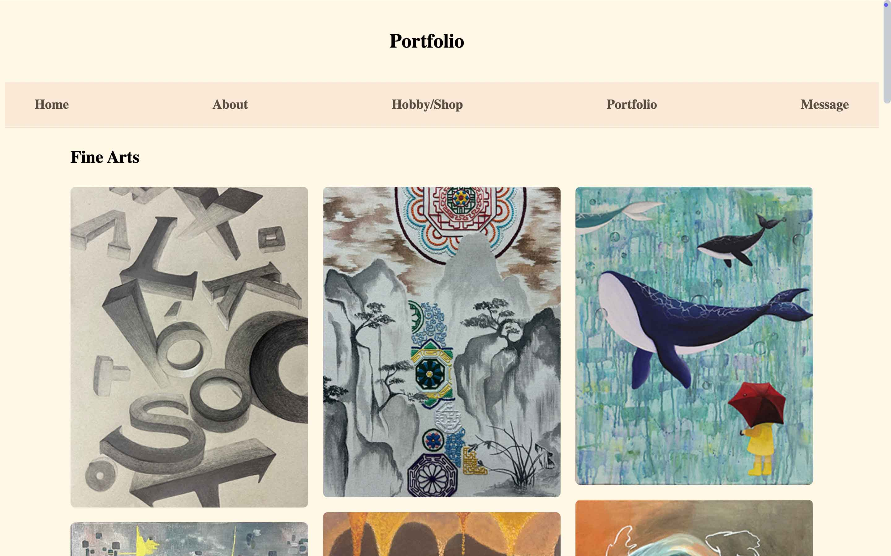
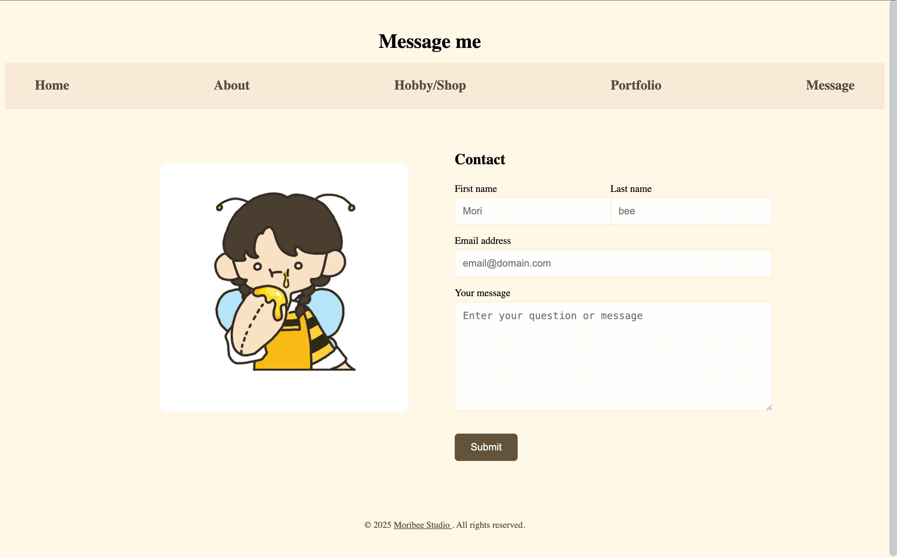
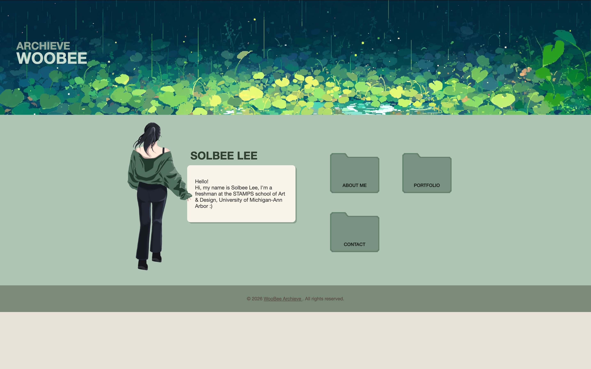
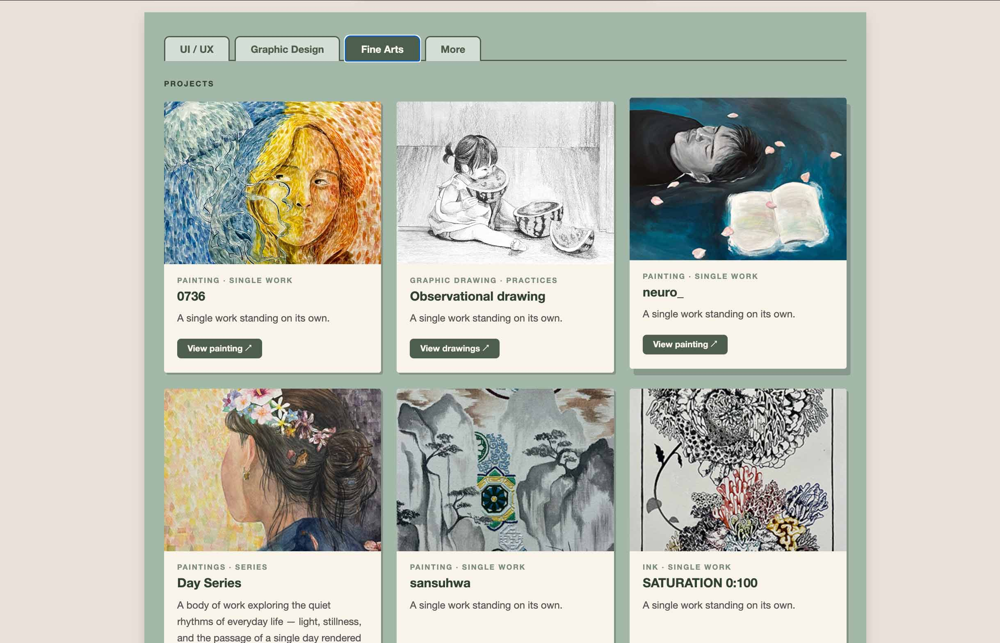
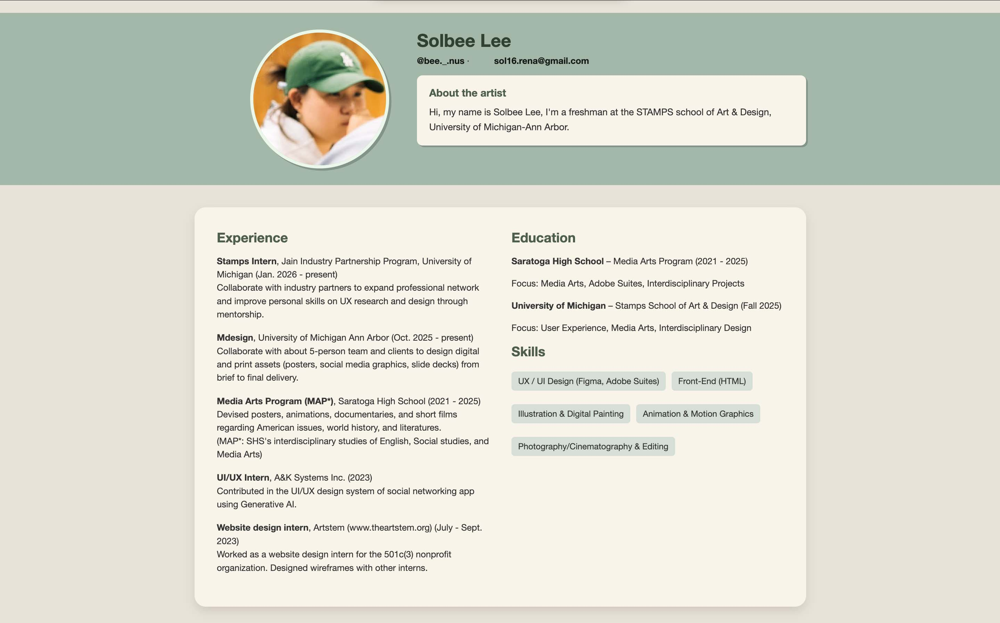

Portfolio Website · UX/UI Design
A personal portfolio site built from scratch with HTML, CSS, and JavaScript — designed to feel like a quiet studio space for art, design, and UX work.
01 — Overview
Woobee Archieve is my personal portfolio website — a space to archive and present my work across fine arts, graphic design, and UX/UI. The name is a play on my nickname "Bee" and the idea of an archive: a living collection that grows over time.
The site is built entirely by hand using HTML, CSS, and vanilla JavaScript, and is hosted on GitHub Pages. No frameworks, no templates — just code written from scratch.
Build a site that could hold very different types of work — paintings, posters, UX case studies — without feeling cluttered or inconsistent. The design needed to feel personal and calm, not like a generic portfolio template.
Create a cohesive, multi-page portfolio that reflects my aesthetic sensibility, is easy to navigate, and can grow as I add new projects over time.
02 — Design Decisions
The palette is anchored in muted sage greens and warm creams — colours that feel quiet and gallery-like without being cold. Every page shares the same hero structure, navigation, and card system so the site feels unified across sections.
One main.css file holds all shared styles. Page-specific styles sit in separate files, keeping things organized and easy to maintain.
All projects live under one URL with tab switching — UI/UX, Graphic Design, Fine Arts, and More — so the page feels like a studio rather than a list of links.
Artwork opens in a full-screen lightbox with multi-image support and keyboard navigation, keeping viewers in context without navigating away.
03 — Development
The site uses no frameworks or build tools. Layout is handled with CSS Grid and Flexbox. JavaScript is vanilla — tab switching, lightbox logic, smooth scroll, and keyboard navigation are all written by hand.
04 — Process
Three stages of development — from initial wireframe sketches, through the first coded attempt, to the current running version.









05 — Reflection
Building this site has been an ongoing design and development exercise. Every time I add a new project or page, I learn something new about CSS specificity, layout, or how browsers handle things differently.
The visual identity came together quickly and feels consistent. The tabbed layout works well for holding many different types of work in one place. The lightbox is one of my favourite features — it makes the artwork feel considered.
Adding more content as projects are completed. Improving mobile responsiveness. Eventually adding a proper home page with more personality — and maybe a dark mode.